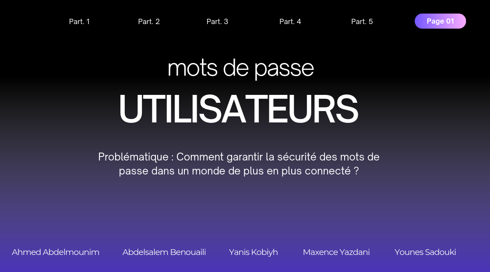
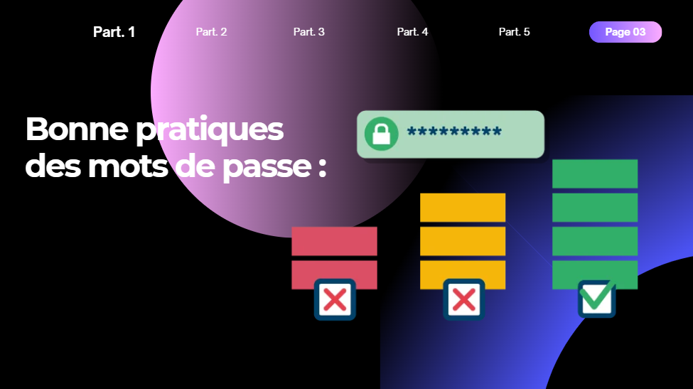
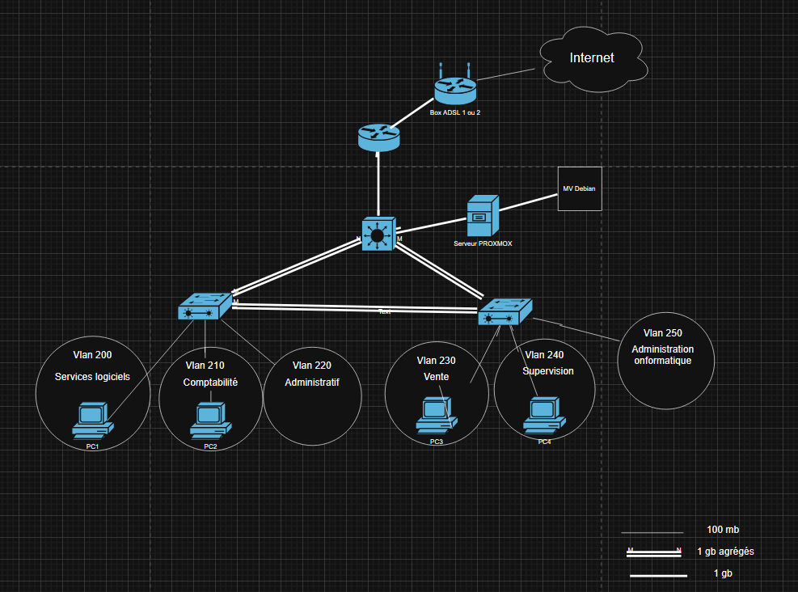
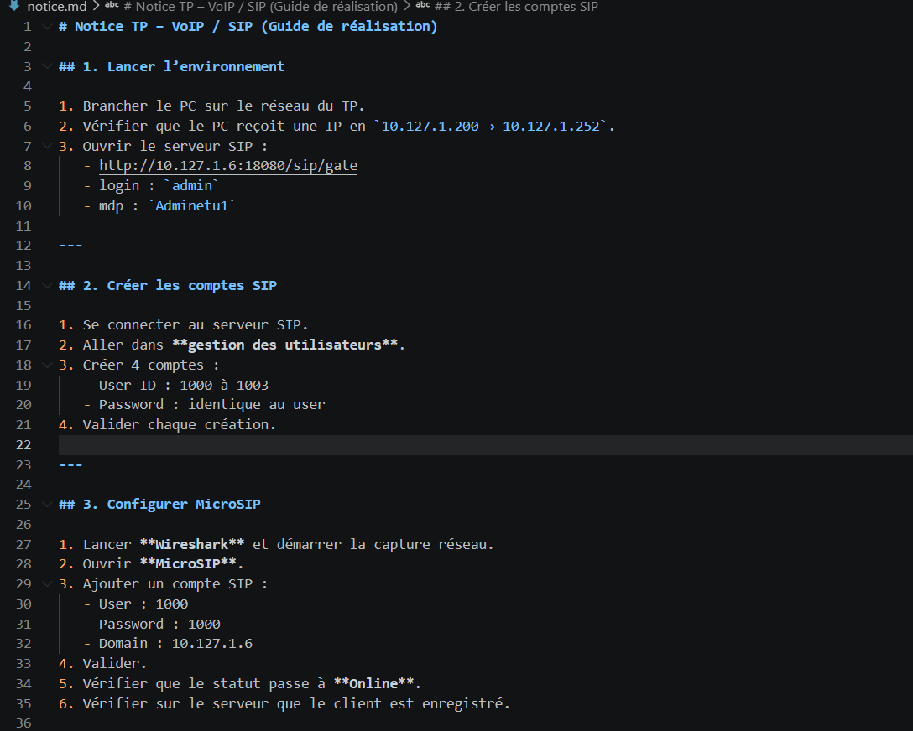
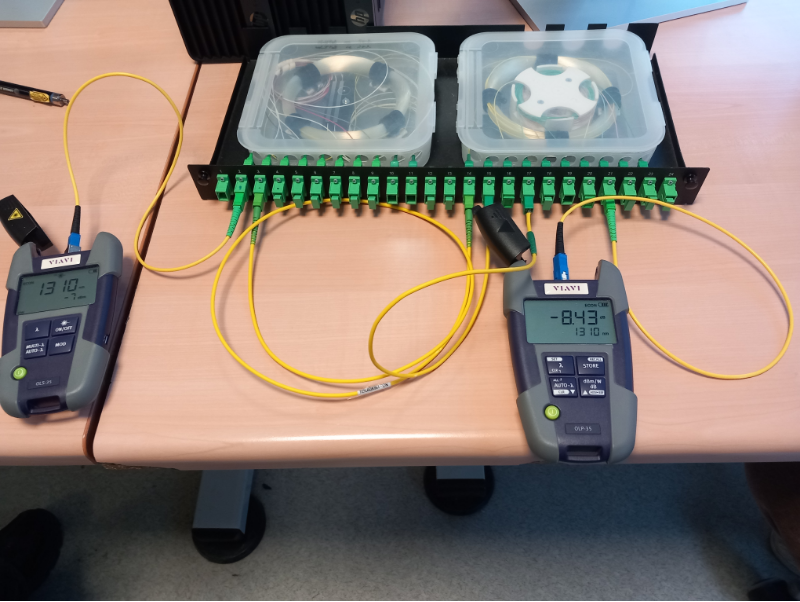
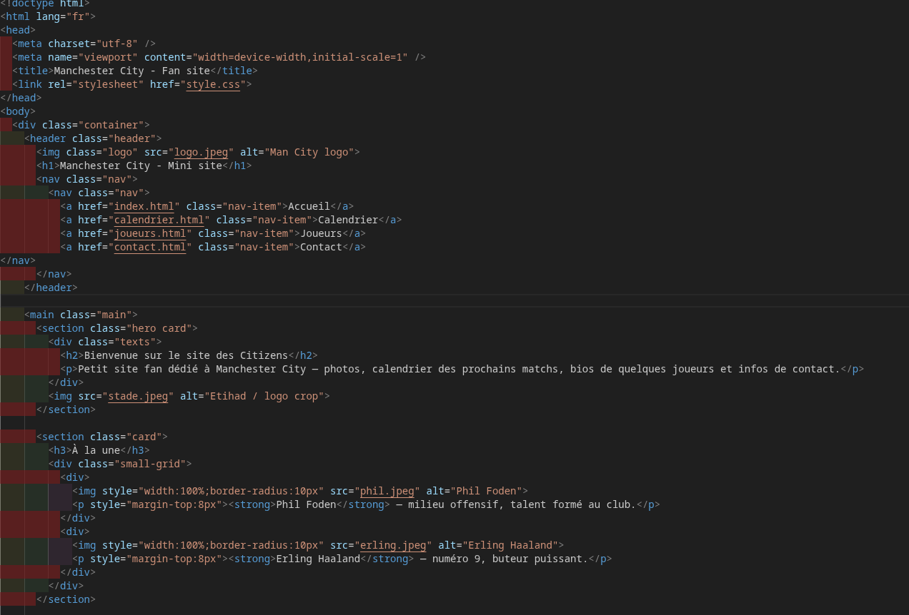
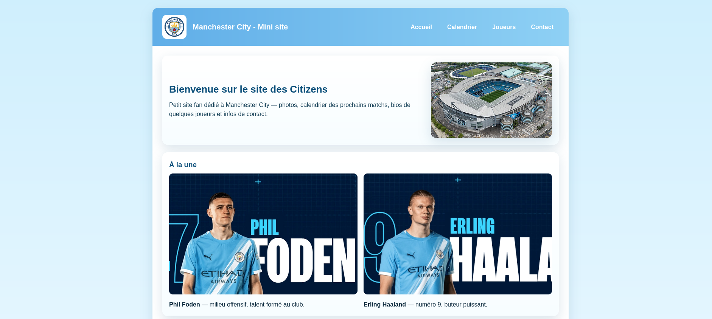
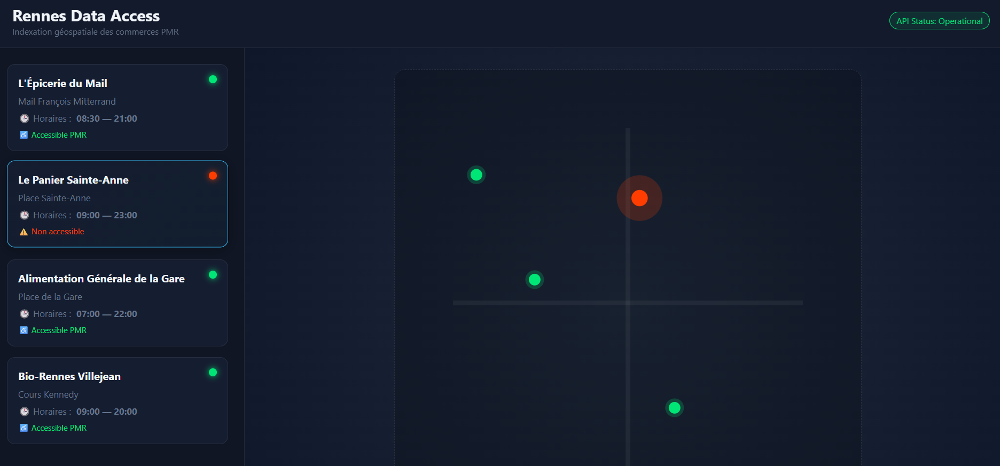
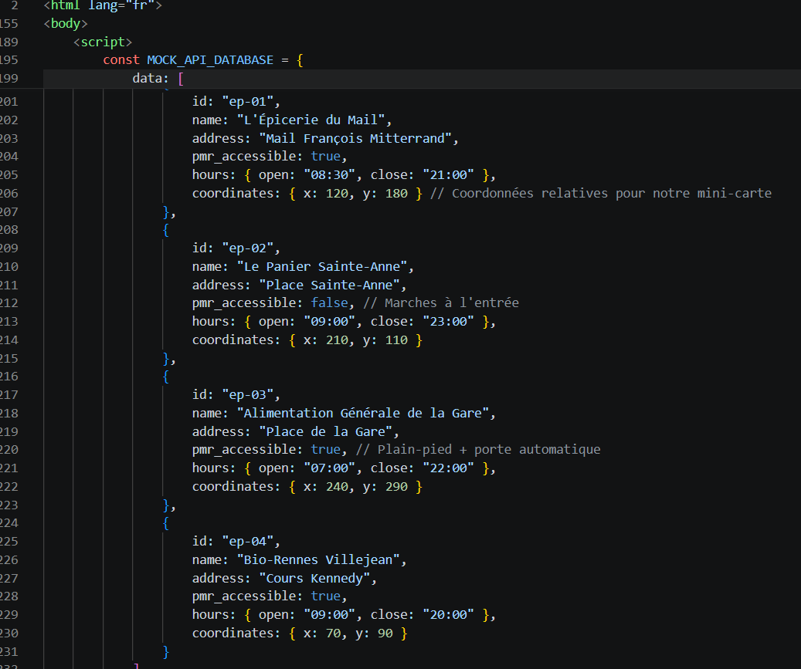

Situations d'Apprentissage et d'Évaluation (SAÉ)
Veuillez dérouler chaque section pour consulter le détail des interventions, la chronologie des phases techniques et les preuves matérielles associées.
SAÉ 1.01 & 1.1 - Hygiène Informatique, Cybersécurité & Audit
Description du projet : Assimilation des règles de sécurité de l'ANSSI et réalisation d'un audit de vulnérabilités système afin de concevoir des politiques d'hygiène numérique dures.
Chronologie et étapes techniques :
- - **Étape 1 : Certification ANSSI** — Validation complète des blocs de compétences théoriques dispensés sur la plateforme SecNumAcadémie.
- - **Étape 2 : Phase de Reconnaissance OSINT** — Utilisation de l'outil Sherlock sur environnement d'évaluation afin d'auditer l'empreinte numérique publique de profils cibles.
- - **Étape 3 : Analyse algorithmique de robustesse** — Configuration du dictionnaire CUPP et lancement d'attaques par dictionnaire ciblées via Hydra pour évaluer la résistance des mots de passe.

Preuve 1.1 : Document cadre d'analyse de la problématique informatique et des structures de sécurité de la formation.

Preuve 1.2 : Graphique et critères d'évaluation de la robustesse des clés d'authentification.
Justification des preuves : L'image `sae1.png` valide notre prise en compte globale de l'écosystème de sécurité de la formation. Le graphique `mdp.png` démontre l'optique technique retenue pour définir un mot de passe fort : une longueur de caractères supérieure alliée à une variété stricte de types de données (chiffres, symboles, casses) afin de bloquer les attaques par dictionnaire.
Auto-évaluation :
Cette intervention a développé mes compétences de vulgarisation en sécurité. J'ai compris que l'implémentation technique d'une politique de sécurité est inefficace si les collaborateurs ne sont pas formés aux règles d'hygiène fondamentales.
SAÉ 1.2 - Conception et Implémentation d'une Infrastructure de Services
Description du projet : Maquettage, configuration et sécurisation complète de l'architecture réseau et des serveurs applicatifs d'une entreprise multi-services.
Chronologie et étapes techniques :
- - **Étape 1 : Modélisation topologique** — Réalisation des schémas d'interconnexion physique et logique des équipements actifs de routage et de commutation.
- - **Étape 2 : Segmentation logique (VLAN)** — Configuration du routage inter-VLAN et isolation des réseaux métiers (Services logiciels, Comptabilité, Administratif, Vente, Supervision, Administration).
- - **Étape 3 : Configuration système et services** — Déploiement de machines Debian virtualisées sous Proxmox avec partitionnement sur 4 disques, couplé à la mise en œuvre de serveurs de voix sur IP (SIP).

Preuve 2.1 : Topologie réseau complète et plan de répartition des VLANs de production.

Preuve 2.2 : Extrait de notre documentation technique rédigée pour l'administration et le déploiement système.
Justification des preuves : L'image `Capture d'écran 2026-05-18 221155.png` matérialise le livrable d'architecture demandé, prouvant l'agencement de nos liaisons agrégées de 1 Gbps. La capture `notice.png` atteste de notre méthode de travail rigoureuse lors de la rédaction pas-à-pas des guides de déploiement SIP de l'infrastructure.
Auto-évaluation :
La mise en œuvre de ce réseau m'a appris à gérer des contraintes d'isolation logiques complexes. La désactivation systématique des accès non chiffrés (Telnet, HTTP) a ancré les réflexes de sécurité indispensables à l'administration.
SAÉ 1.3 - Qualification et Métrologie d'un Dispositif de Transmission
Description du projet : Raccordement physique et mesure photométrique d'une infrastructure de distribution optique longue distance de type FTTH.
Chronologie et étapes techniques :
- - **Étape 1 : Raccordement et brassage** — Alignement et insertion des jarretières de test sur le tiroir optique d'interconnexion en respectant la liaison affectée.
- - **Étape 2 : Test de continuité optique** — Injection d'un flux laser visible afin de localiser d'éventuelles contraintes mécaniques ou cassures sur le brin de fibre.
- - **Étape 3 : Évaluation de la puissance** — Raccordement d'un photomètre étalonné à 1310 nm pour mesurer précisément les pertes d'insertion globales du canal.

Preuve 3.1 : Relevé de l'atténuation totale de la liaison stabilisée sur le photomètre à 1310 nm.

Preuve 3.2 : Sortie du flux laser rouge prouvant la continuité parfaite de la transmission.
Justification des preuves : L'image `tele.png` affiche le relevé photométrique validant une puissance d'atténuation conforme au modèle mathématique. L'image `point rouge.png` a été sélectionnée comme preuve irréfutable de continuité : la projection lumineuse visible confirme la propreté de l'épissurage et l'absence d'anomalie physique destructrice.
Auto-évaluation :
Ce projet a consolidé mes compétences en métrologie de supports physiques. J'ai constaté que l'usure ou la moindre présence de micro-poussières sur les connecteurs modifiait directement la puissance reçue, exigeant une minutie absolue.
SAÉ 1.4 - Conception et Développement d'une Interface Web
Description du projet : Intégration et développement sémantique d'un site web fan adaptatif conforme aux standards du W3C et aux règles d'accessibilité numérique WCAG 2.0 AA.
Chronologie et étapes techniques :
- - **Étape 1 : Modélisation et codage HTML** — Structuration des pages en langage HTML5 sémantique pour isoler la structure logique des données du site.
- - **Étape 2 : Stylisation CSS responsive** — Écriture des feuilles de style CSS3 exploitant Flexbox pour adapter l'agencement graphique sur tous types d'écrans.
- - **Étape 3 : Validation de conformité** — Test du code source via les validateurs officiels pour assurer la propreté structurelle et corriger les bugs d'affichage.

Preuve 4.1 : Vue de la structure du code d'intégration sémantique de l'interface.

Preuve 4.2 : Rendu graphique de la page d'accueil d'intégration du mini-site fan de Manchester City.
Justification des preuves : Le fichier `cityfan.png` expose le code source HTML5 structurant les blocs de données du site. L'image `toutain.png` représente le rendu visuel final de notre page d'accueil, validant le comportement élastique de l'interface et l'agencement exact prévu lors de la phase d'intégration CSS.
Auto-évaluation :
Ce projet m'a familiarisé avec les contraintes d'ergonomie et d'adaptabilité du code front-end. La mise en œuvre de structures fluides m'a appris à anticiper les variations d'affichage selon les résolutions de terminaux.
SAÉ 1.5 - Traitement Logique de Données et Cartographie Applicative
Description du projet : Développement d'une application d'analyse géographique en langage Python interrogeant une API distante pour cartographier dynamiquement les commerces de Rennes selon leurs critères d'accessibilité PMR.
Chronologie et étapes techniques :
- - **Étape 1 : Requêtage réseau (API)** — Configuration des requêtes HTTP pour extraire les flux massifs d'informations brutes du serveur OpenStreetMap.
- - **Étape 2 : Tri et parsing de flux JSON** — Analyse algorithmique des structures de dictionnaires imbriquées pour filtrer uniquement les attributs requis.
- - **Étape 3 : Génération graphique de la carte** — Utilisation de la bibliothèque Folium pour projeter dynamiquement des repères géodésiques colorés selon l'état des infrastructures.

Preuve 5.1 : Script applicatif programmé pour le traitement de la structure de données JSON.

Preuve 5.2 : Extrait du dictionnaire filtré isolant des commerces ciblés de l'agglomération rennaise.
Justification des preuves : La capture `rennes.png` montre le cœur algorithmique modulaire développé pour analyser les flux d'entrées. L'image `saintanne.png` dévoile un extrait de notre dictionnaire JSON filtré : elle prouve l'efficacité du tri lors de l'isolement d'épiceries spécifiques comme "Le Panier Sainte-Anne", validant la robustesse du traitement des exceptions et des valeurs nulles.
Auto-évaluation :
La manipulation de flux de données asynchrones a renforcé mes compétences en programmation structurée. L'utilisation systématique de la méthode de sécurité .get() a permis de prémunir l'application contre les arrêts fatals dus aux irrégularités des bases de données publiques.